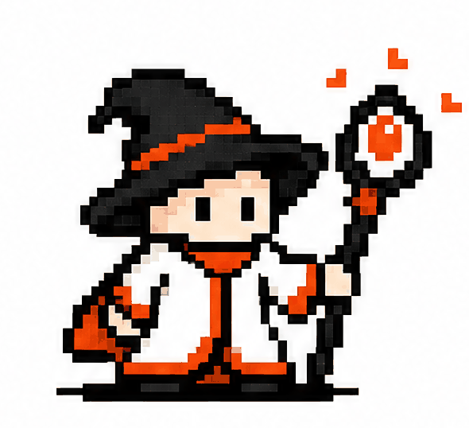

TNDA CO-CREATION ROLE TEST
Find Your共創角色測驗
面對合作、變動與未知，你最常啟動的是哪一種力量？六個情境，找出你的 TNDA 共創角色。
TNDA CO-CREATION ROLE TEST
面對合作、變動與未知，你最常啟動的是哪一種力量？六個情境，找出你的 TNDA 共創角色。
SCENARIO 01 · 選擇最接近你的反應

你擅長退一步看清全貌，在關鍵時刻找出真正的弱點。
你通常先蒐集資訊、拆解問題，再把複雜的情況整理成可理解的線索。共創時，你帶來的不是最多的聲音，而是能讓團隊少走彎路的關鍵觀察。